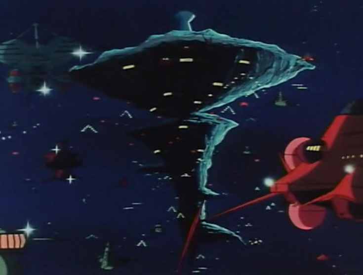

A Baoa Qu A Baoa Qu
Space 4 Days From Earth Asteroid Fortress Gihren Zabi A Baoa Qu is the final line of defense between Side 3 and Earth, situated at an equal distance between the Zeon colonies and the moon. It is a monstrous asteroid, actually contsructed by engineering two asteroids together. Gihren Zabi uses this colony as his base of operations, overseeing the SAF, TAF and MAF with an iron grip, and pushing the Zeonic war machine towards the destruction of the Earth Federation. Gihren Zabi A man who prides himself on being compared to Hitler, Gihren is a no nonsense dictator, cruel and insensitive and without mercy. He commands the entirety of the Zeon forces, only superceded by his father Degwin, and on most points in name only. Further, he is the commander of the sinister Schutzstaffel, which reports only to him. A terrible man indeed, those close to him do not know if he wishes for anything other than power. A Baoa Qu  |